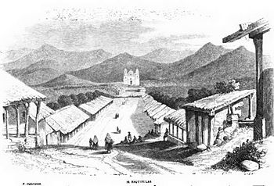
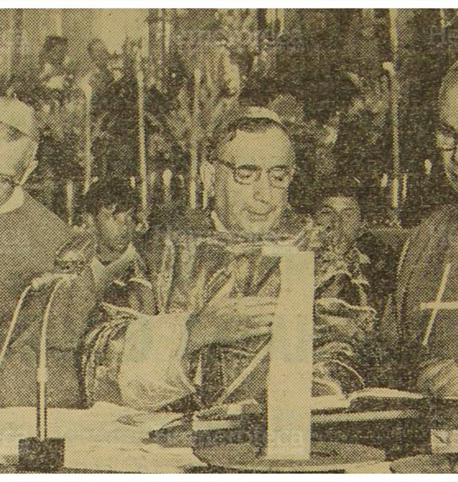

Hace 57 años, su santidad Juan XXIII firmó la bula pontificia que convertía
el templo del Cristo Negro de Esquipulas en la primera basílica de Centroamérica.El 16 de abril de 1961 monseñor Mario Casariego, obispo auxiliar de la arquidiócesis
leyó las bulas pontificias, que elevaban al rango de basílica nacional al máximo templo de la catolicidad guatemalteca y centroamericana.A la ceremonia asistieron
jerarcas de la iglesia católica de Centroamérica, el presidente de la República Miguel Ydígoras Fuentes, presidente del Organismo Judicial Hernán Morales Dardón;
el presidente del Organismo Legislativo , señor Rubén Flores Avendaño, el alcalde capitalino Luis Fernado Galich, y cientos de feligreses.
La ceremonia inicio con una misa rezada de comunión general y seguidamente una solemne procesión del Santísimo Sacramento que de la iglesia parroquial se dirigió
al histórico santuario.El templo se encontraba completamente lleno y casi imposible moverse al interior. Peregrinos de distintos países se encontraban en oración.

El santuario estaba bellamente iluminado mientras miles de candelas, se consumían en las manos de los feligreses.Un coro compuesto por integrantes de colegios católicos de la capital entonaban cantos religiosos. Monseñor Mariano Rossell Arellano, arzobispo de Guatemala
y prelado nullius de Esquipulas ofició la misa.
